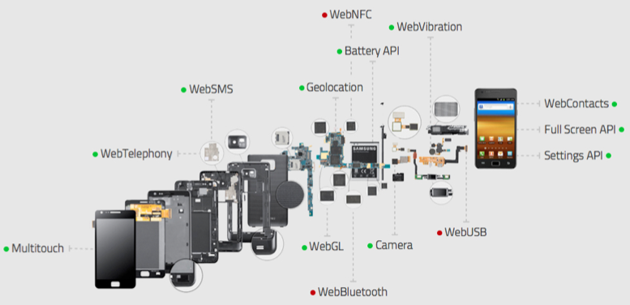

Making apps for an open web device
Making apps for Firefox OS
- Comoyo and Firefox OS
- Building an app
- Design guidelines
Olav Nymoen, Comoyo
Web is the best ecosystem

Bringing the web to mobile
 Mozilla is extending the web with new technologies, giving it the ability to take full advantage of a mobile device.
Mozilla is extending the web with new technologies, giving it the ability to take full advantage of a mobile device.

Web app
Priviledged app
Certified app
Building an app for Firefox OS
Distribute through a marketplace

git clone https://github.com/comoyo/ffos-list-detail
cd ffos-list-detail
git submodule update --init --recursive
npm install
node server.js # Server running at 0.0.0.0:8081

Gap in best practices: offline
<html manifest="example.appcache">
CACHE MANIFEST
# 2010-06-18:v2
CACHE:
index.html
scripts/main.js
NETWORK:
/myapi
FALLBACK:
*.html /offline.html
- Zip the resources (including the manifest.webapp)
- Create an external mini-manifest called package.webapp
- Install the app with navigator.mozApps.installPackage(url-to-mini-manifest)